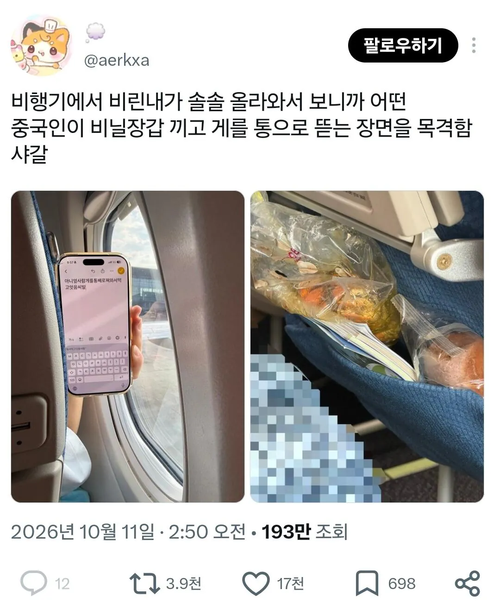
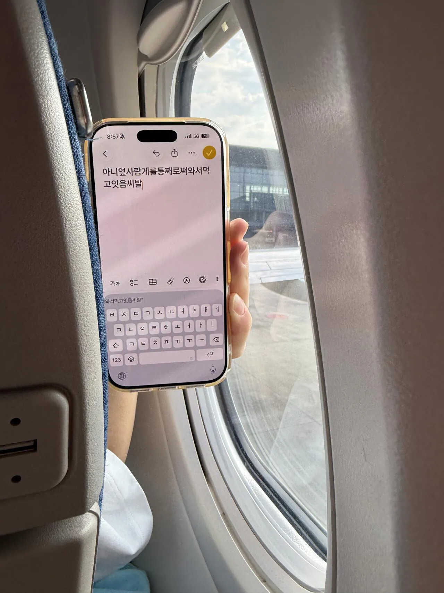
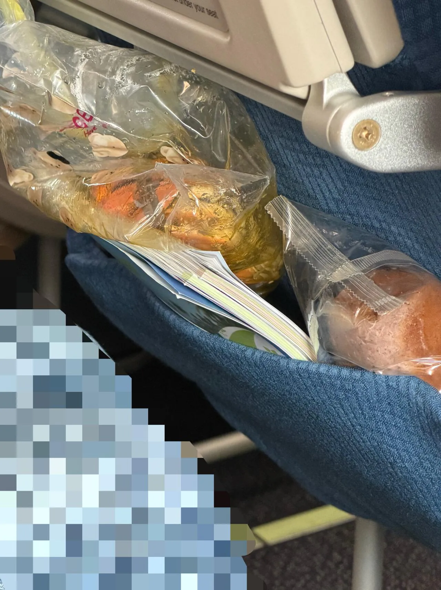

라운지에서 갖고 왔나??



라운지에서 갖고 왔나??
국내선인가
시트색이랑 공항보니 베트남항공임 vn402인거같고 공항은 탄손낫으로보임 게도 동남아 머드크랩임
뭐야 무서워요...
왜무섭;; 베트남거주민이라 알수밖에없어...... 자주타던곳이니까
기종도 아니고 비행편명을 저거보고 맞추는데 어케 안무서워해오.....
어...음.. 낮시간에 베트남항공 호치민에서 인천가는건 vn402밖에없어서...그래서 오래살다보니 자연스레 알게된거임 근데 게는어뜨케가지고탔는지는 몰?루 공항내부에선 게요리파는데는없는데
짱1깨시진핑좆집년국 라운지에서 가져왔나본데
저런건 승무원이 제지 못하나?
?? 저게 반입이 됐다고?
중국인이라 욕하는게 아니라
욕하고 보니 중국인
라운지에서 포장하고 숨겨온게 맞는듯
라운지에서 포장해온건가 ㅋㅋ
불법 아니냐?
보안 검색대 통과한 이후에 라운지나 식당에서 몰래 챙겼네
빨리 감을 드려라
진짜 어메이징 하다 ㅅㅂㅋㅋㅋㅋㅋㅋㅋㅋ
ㅈ나 혐오스러운 국가
어케 들고갔냐...
잘 모르는 사람이 많은데, 액체류가 아닌 음식은 보안 검색대 통과가 가능하다. 처음부터 들고 왔을 것임..
저게 됨? ㅅㅂ
저게 반입이 됐다는게 놀랍네